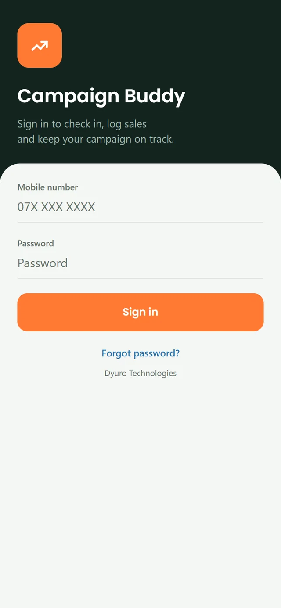
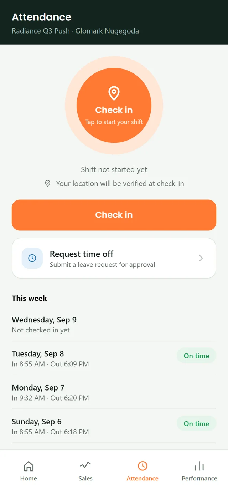
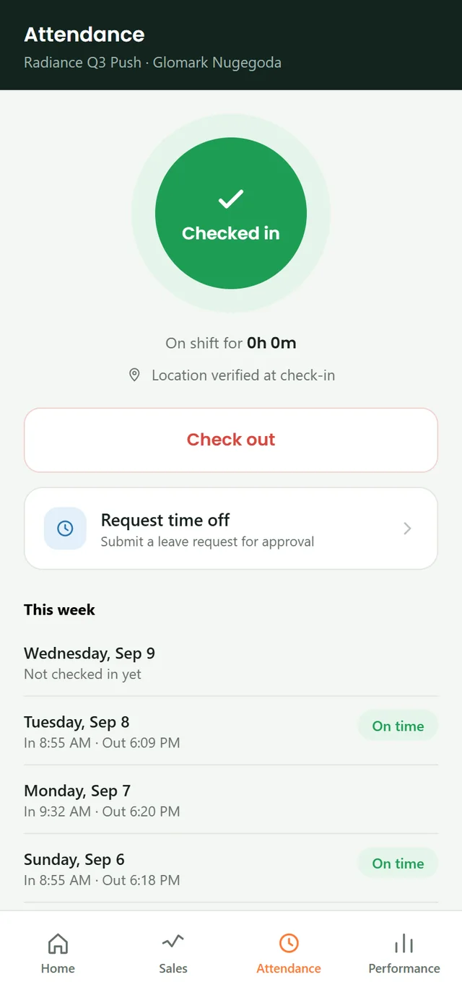
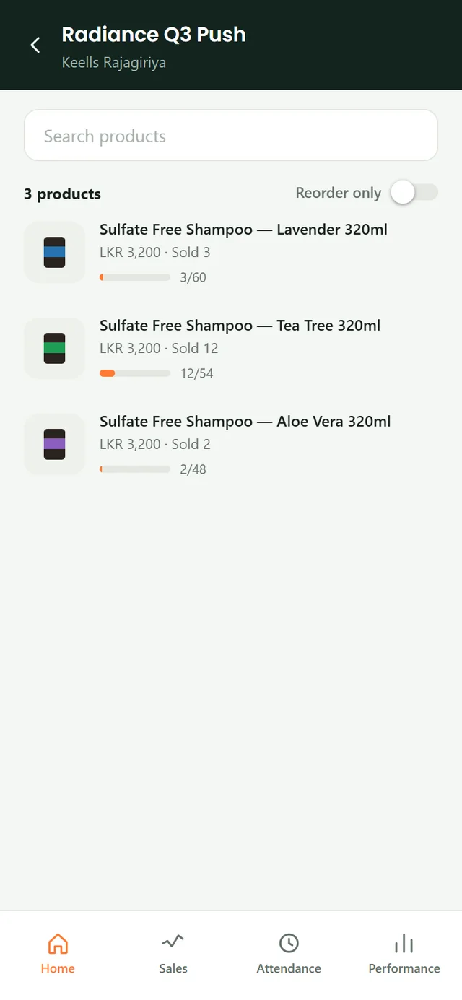
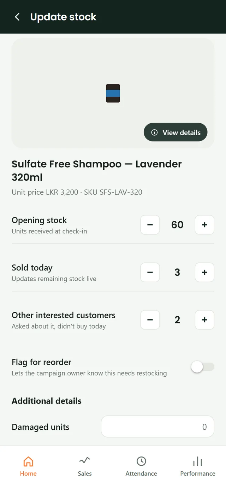
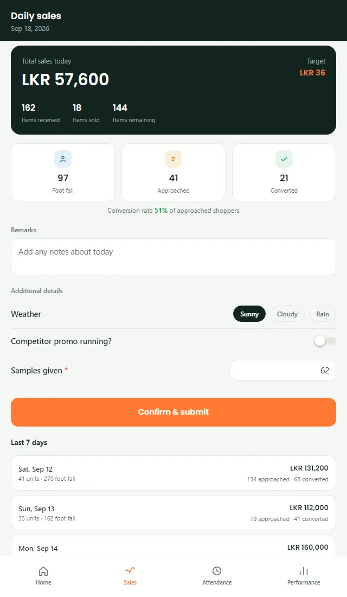
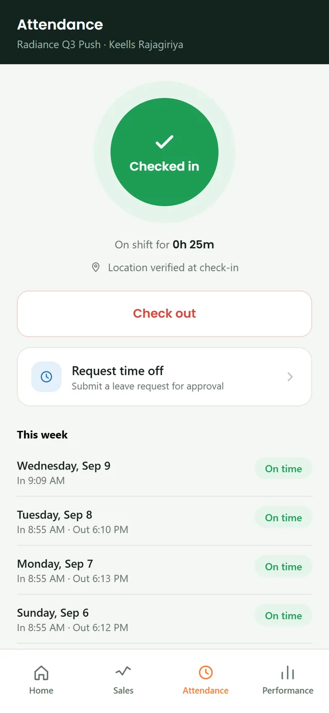
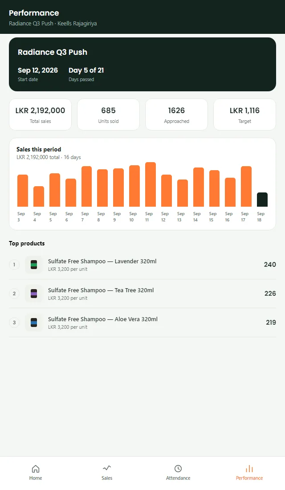
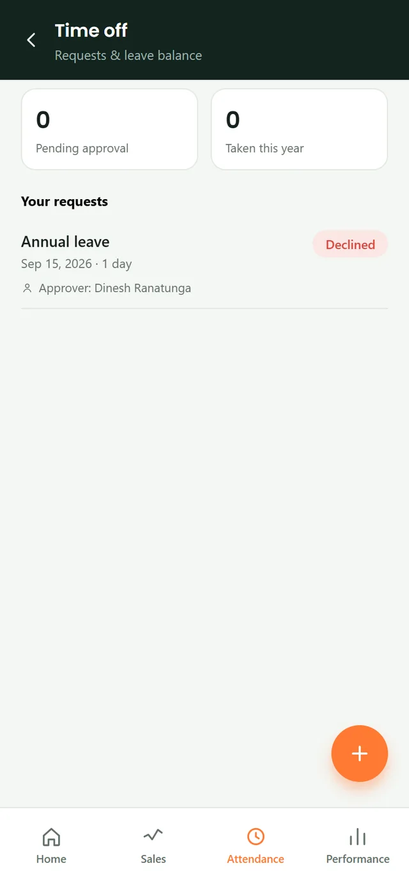
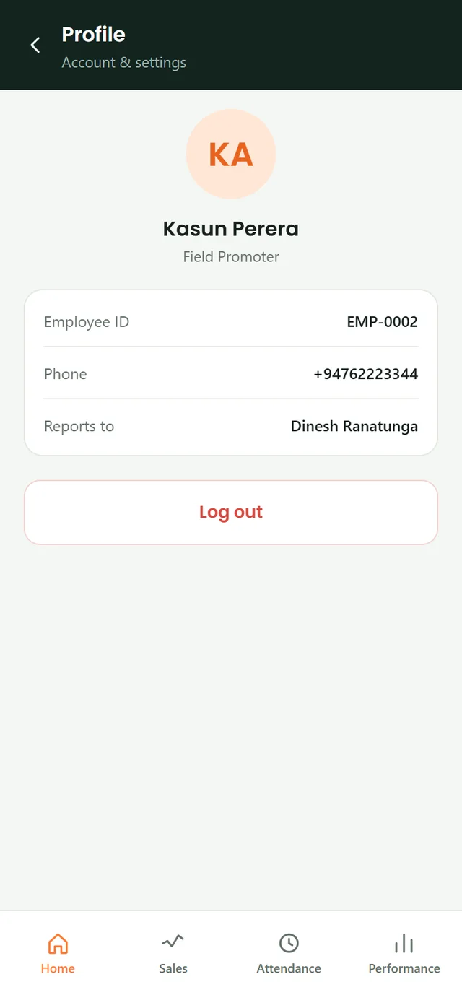

Promoter guide
This is the app you use on every shift. It replaces the group-chat photos and the paper stock sheet: you check in when you arrive, keep stock and sales up to date through the day, confirm your numbers, and check out. Everything you enter shows up live for your supervisor and head office, so there is nothing to send at the end of the day.
01Sign in
Once per phone, or whenever you are signed out
Sign in
-
Open the app. In Mobile number, type your number the way you normally write it,
0771234567is fine. Type your Password.Tip: if you were given an app username before, that still works in the same box.
-
Tap Sign in. The app stays signed in after that, so you normally only do this once. Forgot your password? Tap Forgot password? and tell your supervisor.
02Start your shift: check in
Do this as soon as you reach the outlet
Start your shift: check in
The Home screen shows today's campaign and outlet, and whether you are checked in. Until you check in it says Not checked in.
-
Go to the Attendance tab at the bottom. Tap the big orange Check in button.

-
The app takes your location and checks you in. You will see Checked in and a running "on shift for…" timer, with either Location verified at check-in, or, if you checked in away from the outlet, an amber note that your supervisor can see this.
If your location cannot be confirmed the check-in still works; it is just flagged for your supervisor to review. It never blocks you.
-
You can only be checked in to one shift at a time. If you are already checked in somewhere else, check out there first. Your check-in is marked on time if it is within 10 minutes of your shift start, late after that.
03Update stock and sales
Through the day, as products sell
Update stock and sales
Keep this current as you go; do not leave it all to the end. Your supervisor and head office see these numbers live.
-
On Home, tap Campaign products (or search). You get the list of everything this outlet stocks, with what is available and what has sold.

-
Tap a product to open Update stock.

-
Set the numbers with the − / + buttons, or tap the number itself to type it directly:
Opening stock, how many units you started the day with. Raise it if a delivery arrives mid-day.
Sold today, units sold. Cannot be more than opening stock.
Other interested customers, people who asked about it but did not buy today. -
Turn on Flag for reorder when stock is running low, so the supply team knows. Fill any fields under Additional details (for example Damaged units) if your campaign asks for them. Tap Save update when you are done. With no signal it still saves (see task 10).
04Update footfall and conversions
A few times through the day
Update footfall and conversions
-
On Home, tap Today's stats.
-
Set the three counts to the totals so far (not what has changed since last time):
Foot fall, people who passed your stand. Approached, people you spoke to. Converted, people who bought. The conversion rate updates as you go.
Not checked in yet? The counts stay locked until you check in for your shift (task 02) — check in first and they unlock.
05Confirm the daily summary
Near the end of the shift, before you check out
Confirm the daily summary
-
Open the Sales tab. Check the totals at the top, total sales, items received / sold / remaining, and the footfall funnel. If your admin has set a target for this activation, a Target figure shows alongside the totals — it is hidden if none is set. If a number is wrong, go back and fix the stock or stats first.

-
Add a note in Remarks if anything affected the day (weather, a competitor promotion, a stockout). Fill any fields under Additional details, a red * means that field is required.
-
Tap Confirm & submit.
Confirm needs today's footfall funnel filled in. The button stays disabled until you have logged a foot fall and an approached count greater than zero in Update footfall and conversions (step 4) — enter those first, then come back here.Once you confirm, you cannot edit that day. If you notice a mistake afterwards, tell your supervisor, head office can correct it.
06Check out
At the end of the shift
Check out
-
Go to the Attendance tab and tap Check out.

-
The app asks whether you confirmed the sales summary. If you have not, it takes you to the Sales tab to do that first (step 5). Once confirmed, it takes your location and ends your shift. The week's attendance is listed on the same screen.
-
That's the shift done — after checking out, the Check in button is replaced by a Checked out marker. Check-in reopens on your next shift day, so make sure everything is saved before you leave.
07See how you are doing
Any time
See how you are doing
-
Open the Performance tab. It shows a Day X of Y count of how far into the activation you are (paced to whether it is a Weekend or Monthly activation), your totals including Target if one is set, a bar chart of daily sales, and your top products.

08Request time off
In advance, for a future date
Request time off
-
On the Attendance tab, tap Request time off.

-
Pick a reason (sick, annual, personal, other), set the from and to dates, and add a note for whoever approves it.
-
Submit. It shows as Awaiting approval until your "reports to" person decides. You will see the decision here.
Note: the dates cannot overlap a request you already have pending or approved.
09Your profile
To check your details or sign out
Your profile
-
On Home, tap your initials in the top-right corner. Your profile shows your picture (or your initials until the office sets one), your name, role, employee ID, phone and who you report to, with a Log out button at the bottom. Your picture is uploaded by the office — if any detail is wrong, tell your supervisor.

10Working without signal
When the outlet has poor or no mobile data
Working without signal
You can check in, keep recording your day and check out even with no signal. Everything is saved on your phone with the time you did it, and sent automatically when the connection returns.
-
Look at the small pill near the top of Home, Update stock, Today's stats and Daily sales. It reads Online, Offline, or Syncing…, and shows how many changes are waiting to sync. Tap it to open Sync status (also under Profile), which shows when your data was last updated.
-
Keep updating stock, footfall, conversions and the daily summary as normal. When you tap Save update or Update you see a message: Saved ✓ means it reached the server; Saved on this phone means it is stored safely on your phone and will be sent automatically.
Sign in before you head to the outlet. If you close and reopen the app with no signal you are taken straight back in, as long as you have a shift today and have not checked out. You cannot sign in fresh without a connection, and the app will not sign you out for inactivity while you are offline. -
When the signal returns, the app sends everything waiting, in order (check-in first, check-out last), with no action from you. You see All changes synced ✓ and Sync status shows Everything is up to date. Your location trail recorded offline is uploaded too.
Two things may need you, both shown on Sync status: Changed at the office while you were offline means head office corrected a number you also edited — choose Use office numbers or Keep mine. Could not be saved to the server lists anything the server refused, with the reason — tap Try again or Discard.
Logging out? If something is still waiting to send, the app tells you first. It stays on the phone and is sent the next time you sign in.